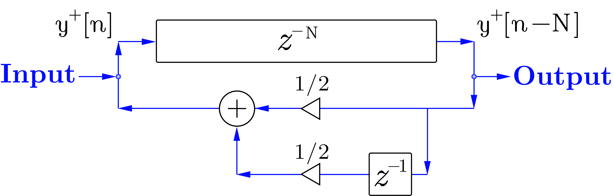
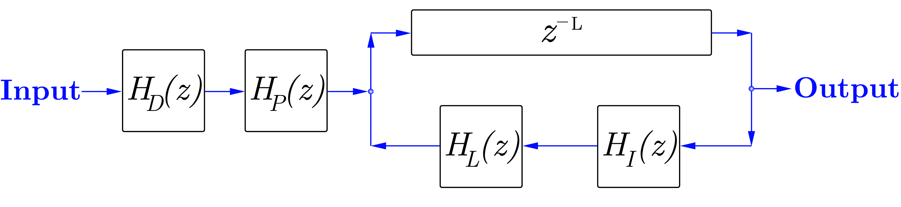
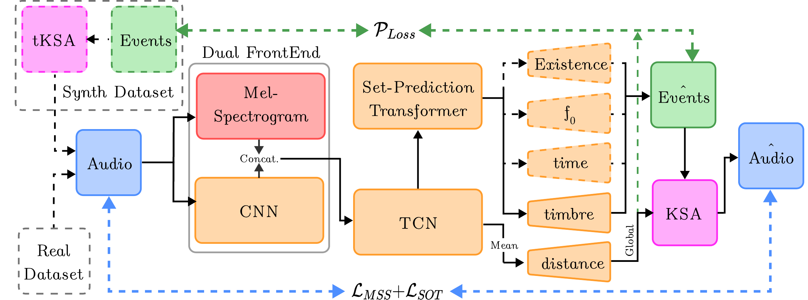
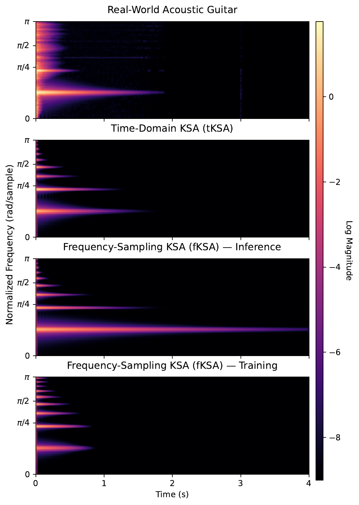
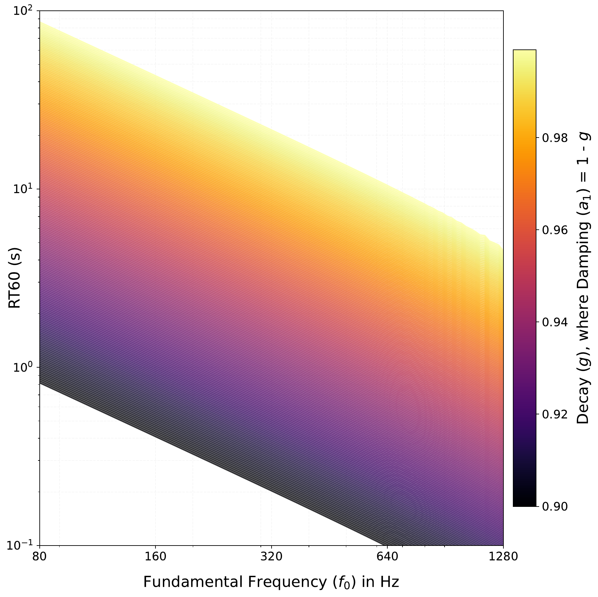

Parameters, no audio
A non-differentiable tKSA trained purely on $\mathcal{P}_{Loss}$ against synthetic ground truth. No audio loss anywhere. Establishes what parameter supervision alone can do.
Pablo Tablas de Paula, David Marttila, Rodrigo Díaz, Irán Román, Emmanouil Benetos, and Joshua D. Reiss
Centre for Digital Music (C4DM), Queen Mary University of London
Chapter one


analytic $|H(e^{j\omega})|$ measured output spectrum
In 1983 Kevin Karplus and Alex Strong published an algorithm that turns a short burst of noise into a convincing plucked string, using almost no arithmetic. Fill a buffer with random numbers, play it out in a loop, and on every pass replace each sample with the average of itself and the one before it. No multiplies at all.
It is worth being precise about what they thought they had built. As the authors describe it, this was wavetable synthesis with a self-modifying wavetable — not physical modelling. The physical reading came afterwards, when Alex Strong showed it to David Jaffe, who brought it to Julius Smith; Smith recast the loop as a delay line with an explicit additive input and recognised the moving average as a point-to-point transfer function on an ideal string. Only then did the delay line become a string and the averager become propagation loss.
In that recasting the whole algorithm is one equation:
$$H(z) = \frac{1}{1 - \tfrac{1}{2}\, z^{-N}\left(1 + z^{-1}\right)}$$
The curve above is that expression, evaluated on the unit circle. Its teeth are the string's harmonics, and the loop filter $H_L(z) = \tfrac12(1 + z^{-1})$ sets how fast each one dies: its magnitude is $|\cos(\omega/2)|$, so energy near Nyquist is removed almost entirely on every trip round the loop while low partials survive. That single fact is the whole timbre of the algorithm — bright at the attack, mellow as it rings.
Notice there is no gain term: the averaging itself is the only loss in the loop. Written exactly that way the algorithm is in fact only marginally stable, because the averager has unity gain at DC — the pole sits right on the unit circle and any DC offset in the noise burst would ring forever. Implementations keep a loop gain a hair below one, and use a zero-mean burst, as this one does.
Now the catch. Pitch comes entirely from the length of the delay line, and that length is a whole number of samples — there is no interpolation filter here to absorb a remainder. Drag the frequency control above and watch the substitution beneath it: the value you ask for is divided into the sample rate, then rounded, and the pitch you actually get is whatever that rounded delay produces.
(Strictly, the two-point average is linear phase with a delay of exactly half a sample at every frequency, so the loop rings at $f_s/(N + \tfrac12)$ and Karplus and Strong's tuning rule is $N = f_s/f_0 - \tfrac12$. The readout accounts for it.)
At low notes the delay line is long and the grid is fine, so the rounding error is negligible — under a couple of cents, well below what anyone can hear. Push up towards the top of the range and the delay line gets short, the grid gets coarse, and the tuning goes badly wrong: past 1 kHz the error exceeds twenty cents, a fifth of a semitone, and plainly audible.
Fixing that is where the story goes next.
The figure has changed. Four new knobs appeared, and the transfer function behind the curve is now the extended algorithm we use throughout the paper:
$$H_{tKSA}(z) = \frac{H_D(z)\,H_P(z)}{1 - H_L(z)\,H_I(z)\,z^{-L_{int}}}$$
Each new factor separates something the original moving average had entangled.
Tuning. The interpolation filter $H_I(z)$ is a fifth-order Lagrange interpolator, whose fractional delay is far more uniform across frequency than the allpass filters used originally. It absorbs both the non-integer remainder of $L = f_s/f_0$ and the loop filter's own phase delay:
$$D = L - \lfloor L \rfloor - P_L(f_0), \qquad P_L(f_0) = -\frac{\angle H_L(e^{j\omega_0})}{\omega_0}$$
The quantisation error you just heard is gone: $f_0$ no longer has to land on an integer number of samples.
Decay and damping, separately. The moving average gives you one fixed brightness curve and one fixed decay rate. Välimäki and colleagues replaced it with a one-pole filter,
$$H_L(z) = g\,\frac{1 - a_1}{1 - a_1 z^{-1}}$$
whose DC gain is exactly $g$. So $g$ sets how long the note rings overall, and $a_1$ sets how much faster the high partials die than the low ones — two knobs for two physically distinct things. Sweep decay and the whole comb rises or falls together; sweep damping and watch the top of the spectrum tilt while the fundamental stays put.
Where you pluck. Plucking a real string at a fraction $p$ of its length suppresses every harmonic with a node at that point. Jaffe and Smith captured this with a feedforward comb, $H_P(z) = 1 - z^{-p}$, applied once to the excitation. Sweep pluck position and you can see the notches march through the harmonic series — set it to $0.25$ and the fourth harmonic and its multiples drop out.
How hard you pluck. A harder pluck is not just louder, it is brighter. The dynamics filter $H_D(z) = \frac{1-R}{1-Rz^{-1}}$ models intensity as a change in spectral tilt rather than a change in gain, which is what the ear actually uses to judge playing strength.
Together these turn a resonator into an instrument — and, more to the point for what follows, into a synthesiser with six meaningful, physically interpretable parameters per note. The rest of this page is about whether a neural network can be made to recover them.
Want to play it rather than read about it? The has both algorithms on a piano roll.
Chapter two
Everything so far assumed we already knew the parameters. Sound matching is the inverse problem: given a recording, recover the parameters that reproduce it. For a physical model like the KSA this is unusually appealing, because the parameters that come back out are interpretable — they tell you something about the string.
Listen to a real recording first. This is an acoustic guitar note from NSynth, plucked once and palm-muted at around three seconds.
Two things happen in that clip, and both are events: an excitation and a termination. Nothing about the string changes in between. This matters for how a model should be shaped. Most DDSP systems predict parameters on a fixed frame grid — a new $f_0$, a new decay, a new damping every few milliseconds. For a plucked string that is both wasteful and actively harmful: the KSA is a recursive, energy-dissipating system, so an error in a frame-wise decay estimate accumulates through the feedback loop instead of staying local.
So we predict a set of events instead. Each event carries an onset time, an $f_0$, and the timbral parameters from Chapter 1, held constant for the note's duration. Provided no extended techniques are present — no vibrato, no pitch bends — this is not an approximation, it is simply the right representation.

Open PDFTraining that by backpropagating an audio loss requires the synthesiser itself to be differentiable. There are two ways to do it, and the difference between them turns out to matter a great deal.
A naive time-domain implementation of a recursive filter computes sample by sample, which builds a computational graph 64,000 nodes deep. Two approaches restore parallelism.
The frequency sampling method evaluates the filter response on a grid of $M$ frequencies,
$$z_M = \left[e^{j\pi\frac{0}{M-1}}, e^{j\pi\frac{1}{M-1}}, \ldots, e^{j\pi}\right]$$
turning the recursion into an elementwise division, with fractional delays becoming a smooth closed-form phase shift $z_M^{-D} = e^{-j2\pi k M^{-1} D}$. The extended algorithm becomes
$$H_{fKSA}(z_M) = \frac{H_D(z_M) H_P(z_M)}{1 - H_L(z_M) H_I(z_M) z_M^{-L}}$$
This is fast and clean, and it has one serious problem. A Hermitian symmetry constraint forces a real impulse response of length $N_{FFT}$. If the true impulse response is longer than that, the tail does not get truncated — it wraps around and adds to the beginning of the frame. The string's decay folds back onto its own attack.
Time-domain interpolation avoids this entirely by computing exact analytic gradients through the recursive filter via the adjoint method, with fractional delay handled by the Lagrange interpolator directly. No frames, so no wrap-around.
The demonstration below makes the consequence concrete. A target is rendered with $g = 0.99$, $a_1 = 0.2$; both implementations start from the same point and descend the real loss surface $\mathcal{L} = 0.05\,\mathcal{L}_{MSS} + \mathcal{L}_{SOT}$, sampled offline with the paper's own code at its 16 kHz working rate. Choose the FFT size, choose whether the pluck happens at the start of the clip or three seconds in, and drag anywhere on the map to move the starting point.
Loading landscapes…
Two things are worth doing here. First, set the onset to 3 s and step through: the time-domain marker walks to the cross, and the frequency-sampling marker does not. Second, look at the loss ranges. The tKSA surface spans a factor of two hundred between its best and worst point; the fKSA surface at a short FFT is almost flat. That flatness is the real damage — it is not that frequency sampling points the wrong way so much as that time-aliasing has erased the signal it needed to point with. A model trained this way overestimates $g$ and underestimates $a_1$, exactly the excess sustain visible in the paper's Figure 4.

Open PDFThe headline result is that time-domain Lagrange interpolation matches frequency sampling on gradient accuracy while avoiding this artefact — which makes it a viable, artefact-free alternative for differentiable physical models with time-varying, highly resonant behaviour.
Timbre parameters, then, are recoverable. Pitch and timing are a different story, and this is the part of the work that surprised us.
To measure it we ask a deliberately minimal question of each gradient — not how large it is, but whether it even points the right way:
$$\mathrm{sgn}\left(\frac{\partial \mathcal{L}(\hat{x}f[n], x[n])}{\partial f}\right) = \mathrm{sgn}(f - f_x)$$
A parameter scoring 50% is indistinguishable from a coin flip. Coarse gradient accuracy initialises across the whole parameter range; fine accuracy initialises within $\pm 10\%$ of the target, asking whether the gradient is still trustworthy once you are already close.
| $\mathcal{L}_{MSS}$ | $\mathcal{L}_{SOT}$ | |||||||
|---|---|---|---|---|---|---|---|---|
| tKSA | fKSA | tKSA | fKSA | |||||
| Parameter | CGA | FGA | CGA | FGA | CGA | FGA | CGA | FGA |
| $f_0$ | 68.0 | 58.4 | 69.6 | 63.6 | 54.8 | 50.8 | 50.0 | 50.0 |
| $g$ (decay) | 100.0 | 100.0 | 100.0 | 99.6 | 70.4 | 47.6 | 73.6 | 47.6 |
| $a_1$ (damping) | 100.0 | 100.0 | 99.2 | 94.8 | 40.0 | 50.0 | 34.4 | 50.0 |
| Pluck position | 66.8 | 89.2 | 67.6 | 90.0 | 49.6 | 48.0 | 47.6 | 46.0 |
| Dynamic level | 100.0 | 99.6 | 98.4 | 92.4 | 97.6 | 100.0 | 98.0 | 98.8 |
| Distance gain | 100.0 | 100.0 | 96.4 | 82.0 | 99.6 | 99.2 | 97.2 | 86.8 |
| Onset time | 51.2 | 55.2 | 52.0 | 56.0 | 42.4 | 14.4 | 62.4 | 88.8 |
Single-event gradient accuracy (%) comparing $\mathcal{L}_{MSS}$ and $\mathcal{L}_{SOT}$ across tKSA and fKSA.
The numbers are stark. Every timbral parameter is reliable under $\mathcal{L}_{MSS}$ — decay and damping score at or near 100%, dropping only to 94.8% for fKSA in the fine regime. Onset time sits at 51–56%: a coin flip. $f_0$ manages 58–70%, better than chance but nowhere near usable.
| $\mathcal{L}_{MSS}$ | $\mathcal{L}_{SOT}$ | |||||||
|---|---|---|---|---|---|---|---|---|
| tKSA | fKSA | tKSA | fKSA | |||||
| Events | Any | Joint | Any | Joint | Any | Joint | Any | Joint |
| 2 | 73.4 | 22.7 | 77.1 | 23.0 | 64.1 | 12.1 | 77.5 | 28.5 |
| 3 | 83.3 | 7.4 | 82.7 | 13.9 | 79.9 | 5.6 | 84.9 | 11.6 |
| 4 | 71.6 | 1.6 | 72.8 | 4.7 | 70.7 | 1.2 | 77.6 | 6.6 |
| 5 | 65.9 | 0.4 | 65.3 | 3.3 | 66.9 | 1.2 | 68.6 | 4.1 |
Multi-event onset time gradient accuracy (%) for $K$ equally spaced plucks. fKSA uses $N_{FFT}=16384$, hop=256. Any: at least one gradient points toward a target; Joint: all $K$ simultaneously toward their Hungarian-matched targets.
And it gets worse with more notes. The Joint column asks whether all $K$ onsets point toward their matched targets simultaneously — which is what actually has to happen for joint training to work. At five events it has collapsed to at most 4.1%. There is, in practice, no usable onset gradient for a multi-event signal.
You can watch the failure happen. Below, the landscape is over onset time (horizontal) and $f_0$ (vertical), with the target's spectrogram in red and the prediction's in blue — where they agree, the overlay goes dark.
Loading landscapes…
Start the marker away from the target and run it. Watch the two axes behave differently — and note what the markers are following. They do not roll downhill on the heatmap beneath them. They follow the true gradient that backpropagation delivers to the model, precomputed by autograd through the synthesiser itself.
That distinction is the whole finding. The loss surface does have usable slope toward the right onset: finite-differencing the heatmap scores 69.4% on the sign test. But onset reaches the synthesiser through a Straight-Through Estimator — the forward pass snaps the burst to the nearest whole sample, while the backward pass routes gradients through the continuous phase rotation of Eq. 9 — and the gradient that comes back out scores 54.4%, against Table 1's 51.2%. A coin flip. The valley is there; the gradient cannot see it.
The $f_0$ axis is better behaved, and the loss-mix slider shows why. Under pure $\mathcal{L}_{MSS}$ the pitch gradient is genuinely directional, at 71.1% — Table 1 reports 68–70%. Slide toward $\mathcal{L}_{SOT}$ and it falls to 63.1%. Since training weights SOT at $1.0$ against MSS at $0.05$, it is the weaker of the two that dominates what the model receives — and $\mathcal{L}_{SOT}$ was adopted precisely to supply the directional frequency information a point-wise loss lacks. Surprisingly, given its design, it is close to blind to $f_0$.
And no reweighting rescues onset, for a structural reason. $\mathcal{L}_{MSS}$ is a vertical, point-wise distance: it compares each time-frequency bin with the same bin in the target, so a correctly shaped note in the wrong place is simply wrong twice — once where it is, once where it should be — with no indication of which direction closes the gap. $\mathcal{L}_{SOT}$ transports magnitude along the frequency axis within each STFT frame, but never between frames. Neither operator can express the sentence “this note should move earlier.”
There is a second, sneakier problem, and this figure explains it:

Open PDFPitch and decay are not independent in this algorithm. A signal at harmonic $k$ passes through the loop filter exactly $f_0$ times per second, so
$$\mathrm{RT60}_k = \frac{-3}{f_0 \log_{10}\lvert H_L(e^{j\omega_k})\rvert}$$
Move $f_0$ and you move the decay time with it. So a gradient step that improves pitch also, unavoidably, changes how long the note rings — and the loss sees both changes mixed together. This is why we supervise the joint analytical decay time RT60 rather than $g$ and $a_1$ independently: it is the quantity that is actually perceptually coherent.
Two failures, then, and they compound: no directional information for onset, and a pitch axis entangled with decay. Together they explain why joint audio-and-parameter training collapses, which is what Chapter 3 is about.
Chapter three
Chapter 2 leaves us with a specific problem. Audio losses are excellent for timbre and useless for onsets. If we train end-to-end on audio alone, the onset and $f_0$ heads receive gradients that are barely better than noise, and — because they share an encoder with everything else — they drag the rest of the model down with them.
There are two ways out, and we test both, plus their combination.
The first is to stop using audio for those parameters. Because we can generate synthetic data with known ground truth, we can supervise the parameters directly. Following the set-prediction literature, Hungarian matching assigns each of the $N = 10$ predicted event slots to a ground-truth event, and the matched loss is
$$\mathcal{P}_{Loss} = w_e \mathcal{L}_e + w_t \mathcal{L}_t + w_{f_0} \mathcal{L}_{f_0} + w_g \mathcal{L}_g + w_{\mathrm{nt60}} \mathcal{L}_{\mathrm{nt60}} + w_p \mathcal{L}_p + w_d \mathcal{L}_d$$
with existence handled by a sigmoid focal loss to cope with class imbalance, and $f_0$ by negative log-likelihood over 128 log-spaced bins rather than a regression — pitch is better posed as a classification.
The second is to hand those two parameters to something that already works: CREPE for $f_0$, spectral flux with backtracking for onsets. The differentiable synthesiser then only has to learn timbre, which is precisely what audio losses are good at.
That gives us three regimes:
A non-differentiable tKSA trained purely on $\mathcal{P}_{Loss}$ against synthetic ground truth. No audio loss anywhere. Establishes what parameter supervision alone can do.
A differentiable decoder trained with $\mathcal{P}_{Loss}$ and $\mathcal{L}_{MSS} + \mathcal{L}_{SOT}$, predicting every parameter jointly. The regime Chapter 2 predicts will struggle.
Audio losses alone, with the existence, onset and $f_0$ heads replaced by classical detectors. The model optimises timbre and nothing else.
To isolate the mechanism we also run stop-gradient ablations on $\mathcal{P}$+Audio: detach the audio-loss gradient from the onset head, from the $f_0$ head, or from both, leaving them supervised only by $\mathcal{P}_{Loss}$. If Chapter 2 is right, detaching should help — which is a strange thing to expect from removing a training signal.
Two datasets. Synth is 4-second mono clips at 16 kHz containing 1–10 plucks at constant $f_0$ over D1–D6, parameters drawn from Beta distributions with a 30% palm-mute probability, reseeded every epoch — 8,360 training samples. Real is the acoustic guitar subset of NSynth, restricted to non-reverberant samples in the same D1–D6 range, split 8,360 / 930 / 290.
| Model | MSS ↓ | SOT ↓ | wMFCC ↓ | RMS ↑ | Prec. ↑ | Rec. ↑ | F1 ↑ | $\Delta$ Cents ↓ | $\mathcal{P}$-Loss ↓ |
|---|---|---|---|---|---|---|---|---|---|
| $\mathcal{P}$-Only | 136.11 | 0.18 | 6.02 | 0.96 | 0.92 | 0.92 | 0.92 | 15.14 | 0.29 |
| Audio-Only (freq.) | 158.95 | 0.19 | 9.29 | 0.91 | 0.94 | 0.85 | 0.89 | 294.39 | 17.49 |
| Audio-Only (time) | 149.07 | 0.16 | 9.23 | 0.93 | 0.94 | 0.85 | 0.89 | 294.33 | 15.66 |
| $\mathcal{P}$+Audio (freq.) | 252.90 | 0.19 | 15.29 | 0.33 | 0.01 | 0.01 | 0.01 | 116.96 | 4.72 |
| ↪ detach $f_0$ | 251.79 | 0.22 | 15.09 | 0.36 | 0.02 | 0.02 | 0.02 | 45.49 | 3.73 |
| ↪ detach onset | 195.29 | 0.27 | 10.92 | 0.81 | 0.31 | 0.31 | 0.31 | 42.60 | 1.94 |
| ↪ detach both | 163.00 | 0.21 | 8.15 | 0.94 | 0.83 | 0.83 | 0.83 | 12.69 | 0.52 |
| $\mathcal{P}$+Audio (time) | 241.16 | 0.20 | 13.47 | 0.43 | 0.01 | 0.01 | 0.01 | 13.86 | 3.74 |
| ↪ detach $f_0$ | 245.77 | 0.18 | 16.29 | 0.38 | 0.01 | 0.01 | 0.01 | 216.76 | 4.55 |
| ↪ detach onset | 157.95 | 0.20 | 8.19 | 0.93 | 0.64 | 0.64 | 0.64 | 13.15 | 0.82 |
| ↪ detach both | 155.96 | 0.23 | 7.59 | 0.94 | 0.84 | 0.84 | 0.84 | 14.26 | 0.48 |
Synthetic parameter recovery. All models are trained and evaluated on synthetic data. $\mathcal{P}$-Only uses tKSA with $\mathcal{P}_{\text{Loss}}$ supervision; $\mathcal{P}$+Audio models use differentiable decoders trained end-to-end with both $\mathcal{P}_{\text{Loss}}$ and audio losses (MSS, SOT); Audio-Only models use differentiable decoders with audio losses and external detectors for onsets and $f_0$. Rows beneath each $\mathcal{P}$+Audio model are stop-gradient ablations that detach the audio-loss gradient from the named head ($f_0$, onset, or both), leaving it supervised only by $\mathcal{P}_{\text{Loss}}$. Per column, the best, second-best, and third-best values are shown in bold, underline, and italic respectively.
The prediction from Chapter 2 holds, and more sharply than we expected. $\mathcal{P}$+Audio does not merely underperform — it collapses. Precision, recall and F1 all fall to 0.01, and RMS to 0.33: the model is emitting near-silence. Detaching the onset head alone lifts F1 from 0.01 to 0.31; detaching both onset and $f_0$ takes it to 0.83 and brings $\Delta$Cents from 117 down to 12.7. Removing a training signal makes the model dramatically better, which only makes sense if that signal was actively misleading — exactly what a 51% directional accuracy means.
$\mathcal{P}$-Only wins nearly everything on synthetic data, including timbre. Beyond having a clean path to the optimum, it benefits from the RT60 reparameterisation, which supervises damping and decay jointly instead of pretending they are independent.
| Model | MSS ↓ | SOT ↓ | wMFCC ↓ | RMS ↑ | CLAP ↓ | EnCodec ↓ |
|---|---|---|---|---|---|---|
| HpN | 246.60 | 0.14 | 7.90 | 0.96 | 266.20 | 17.99 |
| HpN+ | 183.43 | 0.02 | 6.20 | 1.00 | 183.11 | 5.20 |
| $\mathcal{P}$-Only | 311.86 | 0.20 | 13.18 | 0.95 | 193.78 | 64.40 |
| Audio-Only (freq.) | 299.47 | 0.30 | 14.08 | 0.93 | 191.50 | 71.91 |
| Audio-Only (time) | 262.72 | 0.20 | 12.18 | 0.97 | 163.95 | 40.39 |
| $\mathcal{P}$+Audio (freq.) | 468.33 | 0.13 | 32.43 | 0.09 | 547.78 | 494.88 |
| ↪ detach $f_0$ | 466.40 | 0.20 | 30.80 | 0.12 | 431.52 | 482.48 |
| ↪ detach onset | 393.13 | 0.28 | 21.44 | 0.86 | 363.81 | 118.33 |
| ↪ detach both | 348.18 | 0.25 | 15.37 | 0.81 | 204.19 | 116.66 |
| $\mathcal{P}$+Audio (time) | 461.06 | 0.18 | 26.63 | 0.16 | 403.83 | 470.67 |
| ↪ detach $f_0$ | 463.00 | 0.18 | 27.29 | 0.16 | 446.45 | 480.10 |
| ↪ detach onset | 336.72 | 0.19 | 14.88 | 0.82 | 213.53 | 96.80 |
| ↪ detach both | 341.44 | 0.21 | 15.08 | 0.83 | 201.14 | 99.01 |
Real-world instrument modeling results evaluated on the NSynth acoustic guitar test set. $\mathcal{P}$-Only uses tKSA trained on synthetic data with $\mathcal{P}_{\text{Loss}}$ only; $\mathcal{P}$+Audio models are trained with both $\mathcal{P}_{\text{Loss}}$ and audio losses; Audio-Only models are trained with audio losses and external detectors. HpN and HpN+ are Harmonics-plus-Noise baselines using the original DDSP encoder and our TCN encoder respectively. KAD is reported in CLAP and EnCodec embedding spaces. Rows beneath each $\mathcal{P}$+Audio model are stop-gradient ablations that detach the audio-loss gradient from the named head. Per column, the best, second-best, and third-best values are shown in bold, underline, and italic respectively.
On real audio the ordering changes. $\mathcal{P}_{Loss}$ generalises poorly — it frequently misses onsets, most likely because the CNN overfits to synthetic transients and predicts $f_0$ erratically on real ones. Audio-Only with external detectors is the strongest KSA configuration on real recordings, and notably it beats both Harmonics-plus-Noise baselines on CLAP distance, which we attribute to the KSA's natural modelling of sharp transients.
We should be straightforward about the rest: HpN and HpN+ achieve better reconstruction fidelity on most metrics. That gap is structural rather than incidental. A single feedback loop captures neither the resonant guitar body, nor the interaction between the string and the player's hands, nor string–fret collisions — all contributions an HpN model can absorb directly. What the KSA offers instead is a handful of physically interpretable parameters and a faithful transient. No formal listening test was conducted, so we would rather you judged the trade-off yourself, below.
Every model in both tables, on the same examples. Use the toggles to isolate an implementation, reveal the stop-gradient ablations, or bring in the Harmonics-plus-Noise baselines.
Play it
Both algorithms from Chapter 1, on a piano roll. Switch between them with the toggle: the original has no note-off and no parameters beyond pitch, so block length changes nothing you can hear. The extended algorithm responds to note length, and the four knobs below are the ones the network has to recover.
Notes are constrained to C major so it stays musical while you experiment. Bass voices are shown in brown.
If you find this work useful, please cite our paper:
@InProceedings{TablasDePaula:2026:Sound,
title = {Sound Matching with a Differentiable Karplus-Strong Algorithm},
author = {Tablas de Paula, Pablo and Marttila, David and D{\'\i}az, Rodrigo and
Rom{\'a}n, Ir{\'a}n and Benetos, Emmanouil and Reiss, Joshua D.},
booktitle = {Proceedings of the 29th International Conference on Digital Audio Effects (DAFx26)},
address = {Cambridge, MA, USA},
month = sep,
year = {2026}
}